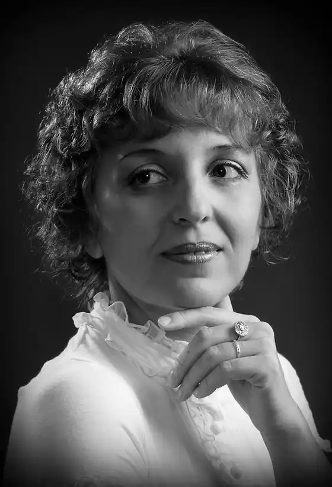
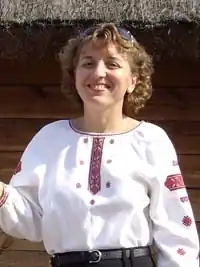

Симчич Надія – українська прозаїк, драматургиня. Народилася на Вінниччині у 1966 році. У 1968 році родина переїхала до м. Сміли Черкаської області. З 1996 року живе у Києві, працює вихователем в одній із київських шкіл. За освітою – філолог. Пише книжки для дорослих і дітей. Також у творчому доробку – інсценізації для театру за творами українських сучасних письменників.
Перше оповідання "Блюз на тему спеки" було надруковано в районній газеті Бобринеччини "Честь хлібороба" восени 1990 року. Твори для дітей, оповідання та інсценізації друкувалися в журналах "Малятко", "Соняшник", "Ар'єргард", "Дніпро", газеті "Шкільний світ", антологіях "У пошуку театру", "Сучасна українська драматургія", "Майдан: до і після", "Мотанка", "Драмовичок".
Письменниця багаторазово перемагала у Всеукраїнському конкурсі романів та кіносценаріїв "Коронація слова": лауреат в жанрі кіносценарію ("Не зникай, Отагамо", 2000 р.), дипломант у жанрі роману ("Мандрівник", 2004 р.), дипломант у жанрі драматургії ("Казка Тропічного лісу, або Мальва", 2005 р.) та "Свято Зірки, або Бажання, здійснись!", 2011 р.); І Премія у жанрі п'єси ("Хата, або Кінець епохи вишневих садів", 2012 р.). У 2003 році п'єсу для дітей "Вирію, не зникай..." було включено до Антології молодої драматургії "У пошуку театру"; в 2006 році п'єсу "Казка Тропічного лісу, або Мальва" – до ІІІ випуску альманаху "Сучасна українська драматургія". Надія Симчич – лауреат Першої Премії у номінації "Авторська казка" І Всеукраїнського конкурсу дитячої літератури "Золотий лелека" за збірку "Казки про Невидиму Силу". "Для мене діти – ті ж дорослі, що мають, щоправда, трохи менше життєвого досвіду і більше надаються до виховання. А ще – вірять у казку і диво, а, отже, ближчі до реальності, яка і є дивом", – говорить письменниця. Вона є автором інсценізацій за творами українських письменників: "Московіада, або ж Прощавай, Москво!", "Свято Воскресаючого Духу", "Дванадцять обручів весни" (за романами Юрія Андруховича); "Тіні срібної ночі" (за романом Валерія Шевчука "Срібне молоко"); "Міра + Ерік(а)" (за романом Лариси Денисенко "Забавки з плоті і крові"), "Енжі, ангел" (за романом Ірен Роздобудько "Ґудзик"). Надія Симчич із тих письменниць, чиї твори для дорослих і дітей ставлять як у професійних, так і в аматорських театрах. Так, її п'єса "Ми, Майдан" – переможець конкурсу мережі театрального перекладу "Євродрама" в Парижі. Драматургиня описує події листопада 2013 – лютого 2014 років, ретельно відібравши свідчення студентів, журналістів, самооборонівців, медиків, священників, волонтерів, киян і приїжджих, чоловіків і жінок, літніх і юних. Їхні думки, слова, молитви, вірші, пісні, дії та мрії творять історію України. У кожного героя п'єси є реальний прототип, з якими авторка підтримує зв'язок і досі. П'єса увійшла до Антології актуальної драми "Лабіринт з криги та вогню".